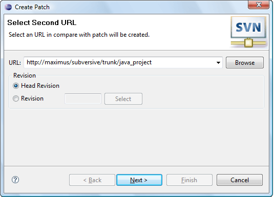
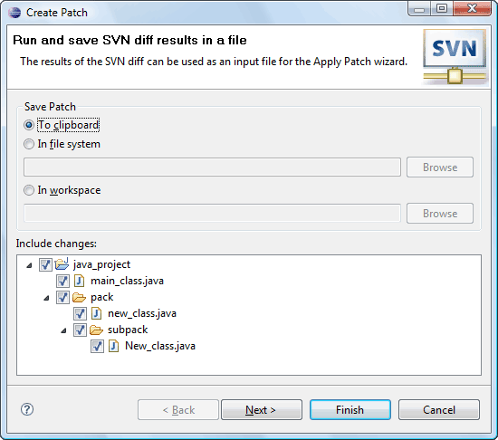
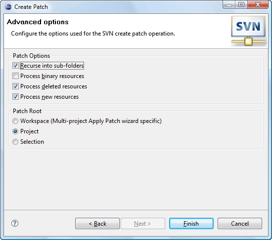

|
|
|
Create patch
Patch is an information on differences of revisions (remote patch creating) or differences between workspace copy and base revision. The user can save this info to clipboard or to specified local file system file or project file. To perform the action click on the 'Team>Create Patch...' menu item of the resource pop-up menu 'Create Patch...' menu item of the 'SVN main menu group'. The wizard will help the user to perform the operation.
If the user is creating a remote patch the first page of the wizard provides a probability to choose a revision number to create patch comparatively to:
The second (first) page of the wizards offers the user to choose, where does he want to save patch information and if the patch is local choose the resources to be included into:
The third (second) and the last page of the wizard allows the user to choose what information shall the patch contain and a root or the patch:
Later created patch may be applied to another revision of the resource.
Applying patch
Applying patch means setting a resource contents to a state specified in the patch. To apply a patch click on the 'Team>Apply Patch...' menu item of the resource pop-up menu.